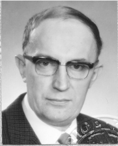

Född 1829-10-04 i Kärrtorp, Jällby (P)

|
Britta Hansdotter.
Född 1801-04-21 i Kärrtorp, Jällby (P) 1 . Död 1876-03-31 i Kärrtorp, Jällby (P) 1 . |
| 1 |
Annicka Andersdotter.
Född 1829-10-04 i Kärrtorp, Jällby (P)
|
| 2 |
Anna Fredrika Pettersdotter.
Född 1851-08-13 i Grude (P) 1 . Död 1925-04-05 i Göteborg 1 . |
| 3 |
Karl Alarik Gustavsson.
Född 1877-03-12 i Hudene (P) 1 . Död 1878-06-21 i Hudene (P) 1 . |
| 3 |
Jenny Hildegard Gustavsson.
Född 1878-07-12 i Hudene (P) 1 . Död 1948 i Norge 1 . |
| 3 |
Sigrid Emilia Gustavsson.
Född 1880-11-07 i Hudene (P) 1 . Död 1881-07-05 i Hudene (P) 1 . |
| 3 |
Hulda Emilia Gustavsson.
Född 1882-05-19 i Hudene (P) 1 . Död 1956-06-30 1 . |
| 4 |
Nellie Niklasson.
Född 1909-09-03 i Mölndal 1 . |
| 3 |
Johan Hildar Gustavsson.
Född 1884-05-16 i Hudene (P) 1 . Död 1956-06-07 i Borlänge 1 . |
| 4 |
Sylvia Margareta Runn.
Född 1920-01-03 i Borlänge 1 . |
| 4 |
Carl Gerhard Runn.
Född 1922-04-13 i Borlänge 1 . |
| 3 |
Gustav Elis Hjalmar Gustavsson.
Född 1886-12-13 i Hudene (P) 1 . Död 1902 i Göteborg 1 . |
| 3 |
Anna Maria Gustavsson.
Född 1889-10-29 i Hudene (P) 1 . Död 1970-03-09 1 . |
| 3 |
Oskar halvar Gustavsson.
Född 1892 i Hudene (P) 1 . |
| 2 |
Charlotta Pettersdotter.
Född 1852-11-19 i Göransgården, Grude (P) Död 1935-10-26 i Spångakil, Ornunga (P) |
| 3 |
Gerda Hildegard Andersson.
Född 1878-08-15 i Grude (P) 1 . Död 1979-03-24 1 . Småskollärarinna |
| 3 |
Oskar Fritiof Andersson.
Född 1881-07-27 i Spångakil, Ornunga (P) 1 . Död 1940-04-21 i Spångakil, Ornunga (P) 1 . |
| 4 |
Tage Fritiof Andersson.
Född 1916-05-18 i Spångakil, Ornunga (P) 1 . Död 1998-11-29 i Trollhättan (P) 2 . |
| 4 |
Ella Maj Andersson.
Född 1918-04-13 i Spångakil, Ornunga (P) 1 . Död omkring 2009 |
| 3 |
Nils Halvar Paul Andersson.
Född 1890-09-06 i Spångakil, Ornunga (P) 1 . Död 1891-03-10 i Spångakil, Ornunga (P) 1 . |
| 3 |
Astrid Emilia Charlotta Andersson.
Född 1892-12-12 i Spångakil, Ornunga (P) 1 . Död omkring 1942 |
| 3 |
Dagmar Sofia Eveline Andersson.
Född 1894-08-09 i Spångakil, Ornunga (P) Död 1992 i Hålegården 1, Hägrunga, Algutstorp (P) |
| 4 |
Elon Gunnar Eliasson.
Född 1922-12-30 i Hålegården 1, Hägrunga, Algutstorp (P) Död 2014-01-17 i Mellomgård, Jonstorp, Hol (P) 3 . Verkstadsägare  |
| 4 |
Britta Charlotta Eliasson.
Född 1925-10-03 i Hålegården 1, Hägrunga, Algutstorp (P) 1 . Död 2006-06-15 i Kullingshemmet, Kullings-Skövde (P) 3 . Kantor |
| 2 |
Johanna Sophia Petersdotter.
Född 1854-03-20 i Grude (P) 1 . Död 1883-07-13 1 . |
| 2 |
Clara Pettersdotter.
Född 1856-01-08 i Göransgården, Grude (P) 1 . |
| 2 |
Per August Pettersson.
Född 1858-01-22 i Göransgården, Grude (P) 1 . Död 1913-10-28 i Göransgården, Grude (P) 1 . |
| 2 |
Amanda Christina Pettersdotter.
Född 1859-12-28 i Göransgården, Grude (P) 1 . Död 1949-08-23 1 . |
| 2 |
Johan Emil Pettersson.
Född 1862-02-11 i Göransgården, Grude (P) 1 . Död 1937-04-24 1 . |
| 2 |
Linus Edvard Pettersson.
Född 1864-04-15 i Göransgården, Grude (P) 1 . Död 1916-07-02 1 . |
| 2 |
Selma Maria Pettersdotter.
Född 1866-07-21 i Göransgården, Grude (P) 1 . |
| 2 |
Albin Viktor Pettersson.
Född 1869-03-16 i Göransgården, Grude (P) 1 . |
| 2 |
Emilin Constantia Pettersdotter.
Född 1871-11-16 i Göransgården, Grude (P) 1 . Död 1872-12-29 i Göransgården, Grude (P) 1 . |
| 1 |
Anna Catrina Andersdotter.
Född 1835-07-27 i Kärrtorp, Jällby (P) 1 . Död 1915-05-21 i Gudmundstorp, Vesene (P) |
| 2 |
Johan Edvard Andersson.
Född 1865-08-25 i Gudmundstorp, Vesene (P) 1 . Död 1962-06-07 i Gudmundstorp, Vesene (P) 1 . |
| 3 |
Alice Edit Charlotta Andersson.
Född 1910-03-30 i Gudmundstorp, Vesene (P) 1 . |
| 4 |
Elna Marianne Holgersson.
Född 1936-07-07 i Gudmundstorp, Vesene (P) 1 . Död 2025-12-13 i Algutsgärde, Ornunga (P) |
| 4 |
Matts Olof Edvard Holgersson.
Född 1938-02-24 i Gudmundstorp, Vesene (P) 1 . |
| 4 |
Berit Gunlög Ingegerd Holgersson.
Född 1939-10-07 i Gudmundstorp, Vesene (P) 1 . |
| 4 |
Alf Ingvar Leopold Holgersson.
Född 1941-06-28 i Gudmundstorp, Vesene (P) 1 . |
| 4 |
Aina Kerstin Louise Holgersson.
Född 1943-05-08 i Gudmundstorp, Vesene (P) 1 . |
| 4 |
Alice Birgit Katrine Holgersson.
Född 1945-03-16 i Gudmundstorp, Vesene (P) 1 . Död 1989 4 . |
| 4 |
Kjell Håkan Andreas Holgersson.
Född 1946-11-13 i Gudmundstorp, Vesene (P) 1 . Pastor |
| 4 |
Helga Lisbeth Holgersson.
Född 1950-06-04 i Gudmundstorp, Vesene (P) 1 . Undersköterska |
| 3 |
Beatrice Eva Maria Andersson.
Född 1912-05-16 i Gudmundstorp, Vesene (P) 1 . Död 1980 i Alingsås |
| 3 |
Elna Ragnhild Eliasabet Andersson.
Född 1914-05-19 i Gudmundstorp, Vesene (P) 1 . |
| 3 |
Elsie Gertrud Viktoria Andersson.
Född 1917-01-29 i Gudmundstorp, Vesene (P) 1 . Död 1981 i Alingsås 1 . |
Framställd 2026-03-08 med hjälp av Disgen version 2025.